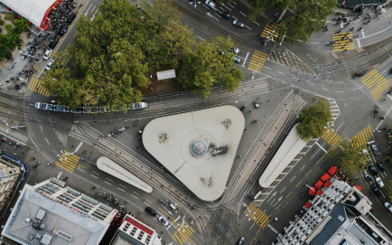
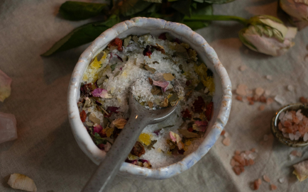

Septiņi attīstības posmi līdz studijām Datorikas fakultātē
Reinis Odītis
Mans ceļš uz Latvijas Universitāti
Matemātika un klavieres
Uzsākot savas skolas gaitas, nokļuvu pie divām šķietami nesaistītām, taču ļoti papildinošām interesēm - matemātikas un klavierspēles, kas izrādījās paliekošas vērtības manā attīstības ceļā.

Mācības valsts ģimnāzijā
Tuvojoties sestās klases beigām, nonācu pie sprieduma, ka jāturpina mācības vidē, kura piedāvā jaunus izaicinājumus. Septīto klasi iesāku Rīgas valsts 2. ģimnāzijas sastāvā.
Programmēšanas olimpiādes
Vidusskolas laikā aizrāvos ar sporta programmēšanu. Pēc informātikas skolotāja maiņas satiku pasniedzēju, kas ieaicināja apgūtās prasmes praktizēt akadēmiskā disciplīnā.

Pamestas studijas
2020. gadā uzsāku savas studijas Latvijas Universitātes Biznesa vadības un ekonomikas fakultātē. Saņēmu budžeta vietu, taču šis ceļa posms izrādījās īsāks nekā domāts.
Darbs Datorikas fakultātē
Pēc studiju pamešanas nācās domāt, ko tālāk iesākt, kur darboties. Nācās atrast darbu. Pēc trīs nedēļu ilgiem mēģinājumiem nonācu pie iespējas strādāt Latvijas Universitātes Datorikas fakultātē.
